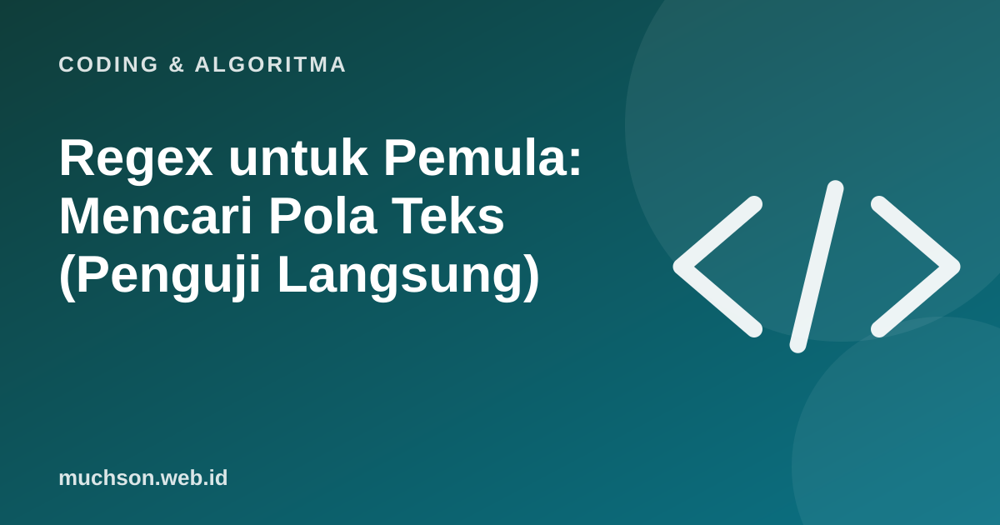

Beranda › Artikel › Coding & Algoritma
Coding & AlgoritmaRegex untuk Pemula: Mencari Pola Teks (Penguji Langsung)
Regex tampak seperti sandi aneh, tetapi hanya sekumpulan simbol dengan arti tetap. Dengan sepuluh simbol saja Anda sudah bisa menyelesaikan banyak tugas: mencari angka, memeriksa format, atau membersihkan teks.

Coba langsung
Simbol dasar
| Simbol | Arti | Contoh |
|---|---|---|
| \d | Satu angka (0-9) | \d\d = dua angka |
| \w | Huruf, angka, atau garis bawah | \w+ = satu kata |
| \s | Spasi atau tab | a\sb |
| . | Karakter apa pun | a.c cocok "abc" |
| + | Satu atau lebih | \d+ = satu atau lebih angka |
| * | Nol atau lebih | ab* |
| ? | Nol atau satu (opsional) | https? |
| {n} | Tepat n kali | \d{4} |
| [abc] | Salah satu karakter di dalam | [aeiou] |
| ^ dan $ | Awal dan akhir teks | ^Halo |
| ( ) | Mengelompokkan | (ab)+ |
Contoh yang berguna
Catatan
Regex untuk memvalidasi email secara lengkap sangat rumit. Pola sederhana cukup untuk pemeriksaan awal. Validasi yang sebenarnya adalah mengirim email konfirmasi.
Tips agar tidak frustrasi
- Bangun pola sedikit demi sedikit dan uji setiap tambahan.
- Gunakan penguji (seperti di atas) agar hasilnya langsung terlihat.
- Pola yang terlalu rumit lebih baik dipecah atau diganti kode biasa.
- Hati-hati dengan pola yang bisa membuat pencocokan sangat lambat pada teks panjang.
Tanya jawab
Apakah regex sama di semua bahasa?
Dasarnya mirip. Ada perbedaan kecil antar bahasa dan pustaka pada fitur lanjutan.
Kapan sebaiknya tidak memakai regex?
Untuk mengurai format bersarang seperti HTML atau JSON, gunakan pustaka parser, bukan regex.
Bagaimana cara menghafal simbolnya?
Tidak perlu. Simpan daftar ringkas, dan latih pada tugas nyata.